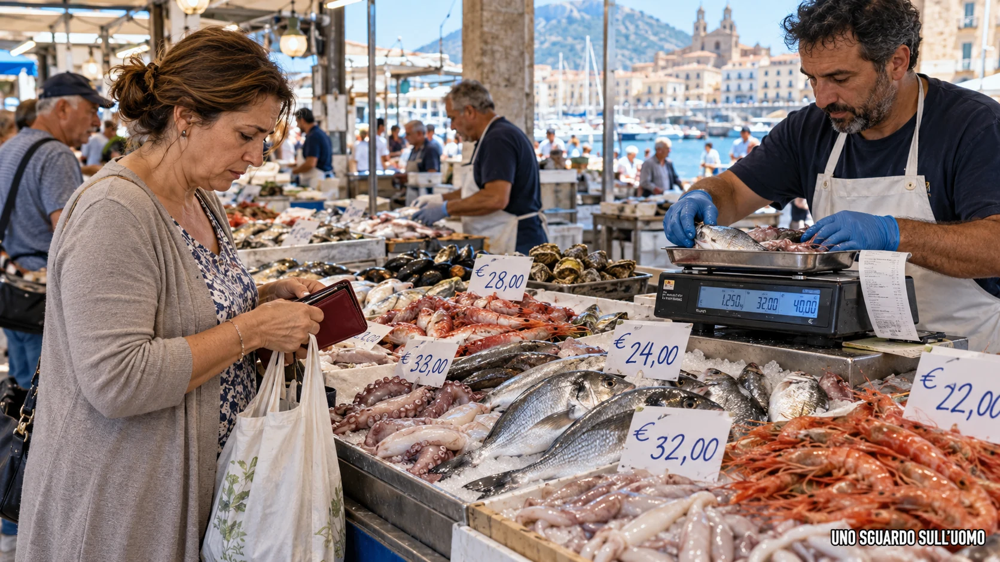

Il caro gasolio è un costo reale. La protesta, però, non può essere giudicata soltanto dal costo denunciato: bisogna guardare chi protesta, quali ricavi genera l’attività, quali aiuti sono già stati riconosciuti, dove si ferma l’aumento dei prezzi e su chi viene scaricato il rischio. Una volta messi in fila questi elementi, la mobilitazione assume un significato molto diverso da quello trasmesso agli ascoltatori.
In questo dossier
- Il punto dell’indagine
- 1. Non “i pescatori”: gli armatori
- 2. Il dato che cambia la protesta
- 3. Le famiglie pagano di più. I pescherecci incassano meno
- 4. Un costo produttivo non è un assegno pubblico automatico
- 5. Gli aiuti esistono già
- 6. I 285 milioni non sono un regalo europeo fermo a Roma
- 7. Il commissario europeo senza nome
- 8. Radio24: quando “confermo” diventa una responsabilità editoriale
- 9. Chi paga davvero a bordo
- 10. La pressione che non è stata esercitata
- 11. Il conto finale arriva al cittadino
- Conclusione
- Nota metodologica
- Fonti
Il punto dell’indagine
Il soggetto politico della protesta non è un indistinto popolo di pescatori. La mobilitazione siciliana è promossa dalla Federazione Armatori Siciliani e la voce ascoltata a Radio24 è quella del suo presidente, Fabio Micalizzi. L’armatore sostiene il costo del mezzo e del carburante, organizza l’impresa e vende il prodotto della battuta di pesca. L’equipaggio presta il proprio lavoro e, nella tradizionale retribuzione “alla parte”, partecipa direttamente al risultato economico della giornata. Confondere questi ruoli fa scomparire proprio chi ha minore potere contrattuale.
Per “prima vendita” intendiamo il prezzo incassato all’origine dal peschereccio o dall’impresa armatoriale quando il pescato viene ceduto al primo acquirente — mercato ittico, asta, cooperativa o grossista — prima dei successivi passaggi della filiera e del prezzo pagato dalle famiglie al banco.
La conclusione di questo dossier è netta: il diritto di manifestare non è in discussione, ma la pretesa di presentare lo Stato come unico debitore della crisi è ingiustificata se i presupposti documentati sono questi. Il prezzo finale pagato dal cittadino è cresciuto; il prezzo medio implicito alla prima vendita, nello stesso periodo del 2025 e del 2026, è invece diminuito di circa il 4%; gli aiuti pubblici esistono; il gasolio della pesca è già agevolato; e i 285 milioni descritti in radio come denaro europeo assegnato all’Italia non sono un trasferimento dell’Unione europea rimasto inutilizzato a Roma.
1. Non “i pescatori”: gli armatori
Le parole contano perché definiscono il conflitto. Dire che “i pescatori scioperano” induce l’ascoltatore a immaginare soprattutto chi tira le reti, governa il ponte, seleziona il pescato e affronta il mare. Ma il promotore della mobilitazione è un’organizzazione armatoriale. L’armatore può essere anche imbarcato, ma la sua posizione economica resta quella del titolare dell’impresa e del mezzo di produzione. È questa posizione, non una generica identità professionale, che consente di capire la richiesta avanzata allo Stato.
Un peschereccio non svolge un semplice servizio di trasporto. Quando esce in mare torna, se la battuta riesce, con il bene che la stessa impresa ha prodotto: il pesce pescato. L’autotrasportatore può invece trasportare banane, animali o bagni pubblici senza esserne il produttore e senza determinare il prezzo del bene trasportato. Per entrambi il carburante è indispensabile, ma la sua collocazione economica non è identica. Nel trasporto il gasolio remunera una prestazione logistica; nella pesca entra nel processo produttivo di un bene destinato alla vendita.
Questa distinzione non rende facile il mestiere dell’armatore e non cancella l’incertezza del pescato. Spiega, però, perché la domanda corretta non sia soltanto quanto costa un pieno. Occorre chiedere anche a quale prezzo viene ceduto il pescato, con quale forza contrattuale, con quali accordi collettivi e con quale distribuzione del ricavo tra impresa ed equipaggio.
2. Il dato che cambia la protesta
I dati confrontano gennaio–maggio 2026 con lo stesso periodo del 2025 e descrivono quantità e valore aggregati del pescato italiano ceduto al primo acquirente. Non confrontano mesi diversi, una sola specie o il prezzo al dettaglio.
| Indicatore | Gen.–mag. 2025 | Gen.–mag. 2026 | Variazione |
|---|---|---|---|
| Quantità venduta | 20.734 t | 21.254 t | +520 t | +2,51% |
| Valore totale | €106,4 mln | €104,7 mln | −€1,7 mln | −1,60% |
| Prezzo medio implicito | €5,13/kg | €4,93/kg | −€0,20/kg | −4,01% |
Elaborazione sui dati di prima vendita Osservatorio europeo del mercato dei prodotti della pesca e dell’acquacoltura (EUMOFA). Le differenze sono sempre riferite a gennaio–maggio 2026 rispetto allo stesso periodo del 2025.
Il calcolo è semplice. Nel 2025 il valore medio implicito è 106,4 milioni diviso 20,734 milioni di chilogrammi: circa 5,13 euro al chilo. Nel 2026 è 104,7 milioni diviso 21,254 milioni di chilogrammi: circa 4,93 euro al chilo. I pescherecci hanno portato sul mercato il 2,51% di prodotto in più, ma hanno incassato complessivamente l’1,60% in meno. Il prezzo medio implicito alla prima vendita è sceso di circa il 4%.
Questo dato non dimostra che ogni impresa abbia avuto lo stesso risultato e non misura da solo l’utile netto. Dimostra però il punto decisivo: l’aumento pagato dal consumatore non è diventato automaticamente un aumento riconosciuto al produttore. La crisi degli armatori non nasce soltanto dal prezzo del carburante; nasce anche dall’incapacità della prima vendita di catturare il valore che la filiera ha chiesto al cliente finale.
3. Le famiglie pagano di più. I pescherecci incassano meno

Il consumatore paga il prezzo finale mentre l’aumento non raggiunge necessariamente il peschereccio. Ricostruzione editoriale. © UNO SGUARDO SULL’UOMO
Il consumatore non ha bisogno di una lezione sull’inflazione per sapere che la spesa è diventata più cara. Gli indici ufficiali registrano l’aumento generale dei prezzi e il banco del pesce è parte di questa esperienza quotidiana. Un rallentamento dell’inflazione non riporta i prezzi al livello precedente: significa soltanto che continuano a salire più lentamente.
Il caso delle vongole è esemplare del modo in cui si costruisce la spiegazione pubblica. L’invasione del granchio blu è stata indicata come causa di maggiore costo e maggiore difficoltà produttiva. Tuttavia la presenza continuativa del prodotto sul mercato e l’aumento del prezzo finale non bastano a stabilire quanto di quel rincaro sia arrivato a chi opera in mare. Lo stesso vale per il carburante: può essere un fattore reale di costo, ma il cartellino più alto al banco non prova che il peschereccio abbia incassato di più.
La serie di prima vendita mostra il contrario a livello aggregato: a fronte di una quantità leggermente superiore, il valore medio unitario è sceso. Il cittadino ha dunque sostenuto un prezzo finale più elevato senza che quel maggior esborso abbia protetto automaticamente il reddito a monte. È qui che il conflitto cambia bersaglio. Se il margine aggiuntivo resta nella filiera e non raggiunge la produzione, il primo problema economico è il potere contrattuale dell’armatore nella prima vendita; non l’assenza assoluta dello Stato.
4. Un costo produttivo non è un assegno pubblico automatico
Micalizzi ha indicato un costo del gasolio marino vicino a 1,30–1,40 euro al litro e ha chiesto di portarlo a 0,60–0,70 euro, rispetto a un livello ritenuto normale di 0,40–0,50. Un rifornimento può così costare migliaia di euro in più. È un aggravio serio, soprattutto quando la battuta di pesca non raggiunge la quantità sperata. Ma l’incertezza del risultato non è un incidente estraneo al mestiere: è parte del rischio d’impresa della pesca.
Anche l’edilizia ha attraversato aumenti violenti di materiali, energia e trasporti. Un singolo cantiere può coinvolgere centinaia di imprese e subfornitori, quindi una filiera tutt’altro che corta. Eppure il settore prova a trasferire i costi nei preventivi, nei contratti, nelle revisioni prezzi e nella programmazione delle commesse. Non sempre ci riesce e non senza conflitti, ma il primo terreno resta il mercato in cui il prodotto o il servizio viene venduto.
Per la pesca la domanda diventa inevitabile: perché l’armatore non riesce a esercitare pressione sul prezzo di prima vendita? Se una flotta dispone della capacità collettiva di fermarsi per chiedere denaro allo Stato, perché quella stessa capacità non viene usata per rinegoziare le condizioni di vendita, anche attraverso un arresto dell’offerta che lasci i mercati senza prodotto? Non si propone un’intesa sui prezzi, che sarebbe illecita; si mette in evidenza una scelta politica e sindacale. La pressione è stata diretta verso la fiscalità generale, non verso il punto della filiera nel quale il pescato cambia proprietario.
Non esistono elementi, allo stato dell’indagine, per sostenere che Micalizzi o gli armatori abbiano interessi proprietari nei passaggi successivi della filiera. Sarebbe scorretto insinuarlo. Esiste però un dato: il valore pagato al dettaglio è cresciuto, mentre il valore medio alla prima vendita non ha seguito lo stesso percorso. La filiera ha trasferito il costo al consumatore, ma non lo ha redistribuito in modo tale da difendere il produttore.
5. Gli aiuti esistono già
La narrazione di una categoria priva di interventi pubblici non è compatibile con gli atti. Le misure hanno fonti, platee e stati di attuazione diversi: alcune sono crediti d’imposta già riconosciuti, altre stanziamenti o bandi, altre ancora nuovi pacchetti annunciati. Proprio per evitare di confondere autorizzazione, stanziamento ed erogazione, vanno riportate separatamente.
| Misura | Dotazione/beneficio | Periodo | Stato documentato |
|---|---|---|---|
| Credito d’imposta pesca | 20%; €10 mln stanziati; €6.994.671,92 riconosciuti a 1.937 imprese | marzo–maggio 2026 | crediti riconosciuti; 185 istanze in riesame |
| Nuovo pacchetto nazionale pesca | €10 mln; credito 10% | spese 1 giugno–15 ottobre 2026 | misura annunciata il 22 ottobre |
| Sicilia — Fondo europeo per gli affari marittimi, la pesca e l’acquacoltura (FEAMPA) + Regione | €12,1 mln + €5 mln | 28 febbraio–31 dicembre 2026 | bando/compensazione diretta |
| Sicilia — ulteriore misura | €5 mln pesca; €10 mln agricoltura | 2026 | decreti approvati dall’ARS |
| Risorse di crisi Fondo europeo per gli affari marittimi, la pesca e l’acquacoltura (FEAMPA) | €70 mln per il comparto attraverso le Regioni | 2026 | risorse nazionali collegate alla programmazione |
Il primo credito d’imposta offre anche una misura concreta dell’intervento: 1.937 imprese ammesse e quasi sette milioni di euro di crediti riconosciuti sulle spese documentate. A questi si aggiungono un nuovo stanziamento nazionale, gli strumenti regionali siciliani e le risorse della programmazione europea. Non tutto è stato necessariamente pagato nello stesso momento, ma non tutto è rimasto sulla carta e, soprattutto, non si può parlare come se non fosse stato disposto alcun sostegno.
Il gasolio impiegato nella pesca marittima gode inoltre di un regime fiscale agevolato. Lo stesso Micalizzi lo riconosce nell’intervista. La richiesta odierna non parte quindi da un carburante trattato come quello acquistato dal cittadino alla pompa: parte da un input già defiscalizzato e chiede che lo Stato assorba un’ulteriore parte della variazione di prezzo.
6. I 285 milioni non sono un regalo europeo fermo a Roma
«L’Europa [...] ha stanziato e deliberato 780 milioni di euro. Una fetta più importante è toccata all’Italia e sono 285 milioni di euro.»
— Fabio Micalizzi, Radio24, 23 ottobre 2026
Questa frase contiene la ricostruzione centrale proposta agli ascoltatori: l’Unione europea avrebbe stanziato una somma, ne avrebbe destinato una quota all’Italia e il Governo non l’avrebbe consegnata alle categorie interessate. Gli atti ufficiali dicono altro.
Il 28 agosto 2026 la Commissione europea ha approvato il regime italiano SA.123714, del valore massimo di 285 milioni di euro, a favore delle imprese agricole, della pesca e dell’acquacoltura colpite dalla crisi mediorientale. “Approvare” significa autorizzare l’Italia a concedere aiuti di Stato compatibili con il mercato interno. Non significa trasferire 285 milioni dal bilancio dell’Unione a quello italiano. La stessa comunicazione della Commissione definisce il provvedimento un “Italian State aid scheme”: un regime italiano di aiuti di Stato.
Il quadro giuridico è il Middle East Crisis Temporary State Aid Framework, abbreviato METSAF. È una cornice normativa temporanea: stabilisce condizioni, massimali e forme con cui gli Stati membri possono sostenere le imprese. Non è un fondo, non è un conto corrente europeo e non distribuisce automaticamente quote nazionali. La pronuncia “Metsat” ascoltata in trasmissione rendeva ancora più difficile per il pubblico identificare lo strumento e controllare la dichiarazione in tempo reale.
| Affermazione in radio | Atto ufficiale | Conclusione |
|---|---|---|
| “780 milioni stanziati dall’Europa” | Il meccanismo di crisi EMFAF indicava circa €760 mln già disponibili nei programmi nazionali | Cifra e strumento non coincidono con il METSAF |
| “All’Italia è toccata la fetta di 285 milioni” | SA.123714 autorizza un regime italiano da €285 mln | Autorizzazione UE, non bonifico UE |
| “Metsat” come fonte dei fondi | METSAF è un quadro temporaneo sugli aiuti di Stato | È una regola, non un fondo |
| “105 trasporto, 60 agricoltura, 10 pesca” | Le misure nazionali provengono da atti e amministrazioni distinti | Non sono la ripartizione provata di un’unica dote europea |
Il possibile punto d’origine della confusione è un altro strumento. Nell’aprile 2026 la Commissione aveva attivato un meccanismo di crisi del Fondo europeo per gli affari marittimi, la pesca e l’acquacoltura — EMFAF/FEAMPA — indicando circa 760 milioni di euro ancora disponibili nei programmi nazionali 2021–2027. Queste risorse erano già preassegnate alla programmazione degli Stati membri. Non erano i 285 milioni del regime italiano e la cifra ufficiale non era 780 milioni.
Sommare i due piani produce una storia semplice ma falsa: l’Europa mette a disposizione 780 milioni, l’Italia riceve 285 milioni e ne consegna soltanto 10 alla pesca. In realtà un atto riguarda la flessibilità di fondi europei già programmati; l’altro autorizza aiuti finanziati dall’Italia. Le cifre nazionali per autotrasporto, agricoltura e pesca derivano inoltre da provvedimenti distinti. Per l’autotrasporto, il Ministero delle Infrastrutture ha indicato 45,2 milioni, 21,2 milioni precedenti e ulteriori 60 milioni: 126,4 milioni complessivi, non la prova di una quota da 105 milioni sottratta alla pesca dentro un pacchetto europeo da 285.
7. Il commissario europeo senza nome
«Noi abbiamo parlato con il commissario europeo della pesca [...] lui ci ha risposto che il problema è del Governo italiano se non li ha messi in campo.»
— Fabio Micalizzi, Radio24, 23 ottobre 2026
Nell’intervista Micalizzi non indica il nome del commissario, la data dell’incontro, il documento o le parole testuali della risposta. La citazione resta dunque una testimonianza attribuita dallo stesso interessato a un interlocutore istituzionale non identificato. Può rafforzare retoricamente il racconto, ma non costituisce un riscontro indipendente.
Anche prendendo la frase per correttamente riferita, essa non dimostra che i 285 milioni siano denaro europeo. Dire che spetta al Governo italiano “mettere in campo” la misura è perfettamente compatibile con la natura dell’atto: la Commissione autorizza un regime nazionale, poi è lo Stato a finanziarlo, disciplinarlo e concederlo. La citazione, pertanto, non smentisce gli atti. Semmai li conferma sul punto decisivo della responsabilità finanziaria e attuativa italiana.
8. Radio24: quando “confermo” diventa una responsabilità editoriale
«Confermo, da quello che dicono oggi le cronache, sì.»
— Alessio Maurizi, Radio24, 23 ottobre 2026
La frase arriva dopo la ricostruzione di Micalizzi sui 285 milioni e sulla presunta distribuzione a trasporto, agricoltura e pesca. Il conduttore non si limita a lasciare parlare l’ospite. Pronuncia la parola “confermo”, poi fonda quella conferma su ciò che “dicono le cronache”. Subito dopo domanda se i soldi debbano arrivare dall’Europa; Micalizzi risponde che arrivano da lì. In chiusura, Maurizi ripete che esistono fondi europei per 285 milioni destinati all’Italia e non spesi.
Con l’affermazione «confermo, da quello che dicono oggi le cronache», Maurizi si fa testimone dell’attendibilità di un dato senza indicare una fonte precisa e senza dimostrare di averlo verificato in modo inequivoco. La sua conferma poggia su un generico richiamo alle “cronache”: una voce collettiva, priva di autore, documento e riscontro identificabile. Nonostante ciò, il conduttore assume davanti agli ascoltatori la responsabilità di dichiarare vero quanto affermato da Micalizzi.
Il problema professionale non è una domanda imperfetta detta in diretta. È la trasformazione di un’affermazione dell’ospite in un fatto garantito dalla trasmissione. La sigla pronunciata in modo errato avrebbe dovuto indurre a fermarsi e verificare. Bastava distinguere tre parole — quadro, autorizzazione, finanziamento — per non lasciare l’ascoltatore con l’idea di un regalo europeo trattenuto dal Governo.
Non è possibile dimostrare, sulla base dell’audio, una volontà deliberata di fuorviare. È però possibile valutare l’esito editoriale: una ricostruzione oggettivamente smentita dagli atti è stata confermata, rilanciata e riassunta come vera. Se non c’è dolo, resta un comportamento non professionale, perché il conduttore ha assunto una responsabilità fattuale senza esibire il controllo necessario.
9. Chi paga davvero a bordo
Il problema economico più delicato è la capacità dell’armatore di soddisfare l’equipaggio. Nel contratto collettivo nazionale della pesca marittima sottoscritto nel 2025, la retribuzione “alla parte” lega la remunerazione dei lavoratori al risultato della produzione. Dal ricavo vengono dedotte determinate spese, tra cui il carburante; il monte netto viene quindi ripartito, in via generale, per metà all’armatore e per metà all’equipaggio, salvo usi locali più favorevoli.
Quando il gasolio aumenta e il prezzo di prima vendita non sale, la compressione non resta chiusa nel bilancio dell’impresa. Riduce la base economica sulla quale viene calcolata la parte destinata all’equipaggio. I lavoratori imbarcati finiscono così per condividere il rischio del carburante e della cattiva battuta senza possedere il mezzo e senza controllare la vendita.
Il contratto prevede anche che gli aiuti pubblici destinati a coprire spese operative deducibili, come il gasolio, siano contabilizzati nel monte produttivo e redistribuiti ai dipendenti. È una clausola essenziale: il sostegno non può fermarsi all’armatore se il costo aveva ridotto la quota comune. La verifica concreta, impresa per impresa, è dunque se gli aiuti riconosciuti siano entrati correttamente nei conteggi e abbiano raggiunto anche l’equipaggio.
Da qui emerge una possibile frattura tra chi rappresenta la protesta e chi ne sopporta maggiormente le conseguenze. L’armatore dispone della voce pubblica, dei rapporti istituzionali e della leva organizzativa. L’equipaggio rischia invece di pagare contemporaneamente il calo del monte da dividere e l’aumento dei prezzi nella vita quotidiana.
10. La pressione che non è stata esercitata
La protesta chiede allo Stato di ridurre il prezzo effettivo del carburante. È la soluzione più immediata per l’armatore: trasferisce una parte del rischio d’impresa al bilancio pubblico e non impone di ridiscutere i rapporti con acquirenti, mercati, grossisti e distribuzione. Ma è anche la soluzione che lascia intatto il meccanismo responsabile del paradosso documentato: il consumatore paga di più, mentre la prima vendita vale meno per chilogrammo.
Una politica di settore coerente dovrebbe partire da quel passaggio. Trasparenza delle aste e dei prezzi, organizzazioni di produttori più forti, contratti che tengano conto dei costi, tracciabilità dei margini, capacità di programmare l’offerta e strumenti di stabilizzazione del reddito sono risposte strutturali. Il sussidio al carburante può tamponare una crisi, ma non conferisce alcun potere contrattuale a chi vende il pescato. Quando termina, la filiera torna identica e il prossimo aumento genera la stessa richiesta.
Il paragone con l’autotrasporto, usato per rivendicare parità di trattamento, è perciò incompleto. Il trasportatore vende un servizio separato dal bene trasportato; il suo prezzo può essere adeguato con clausole carburante, ma egli non incassa il valore delle merci. L’armatore vende invece il risultato del proprio processo produttivo. Se quel risultato non remunera il costo, la prima responsabilità economica è negoziare il valore del prodotto, non dichiarare automaticamente insufficiente ogni intervento pubblico.
11. Il conto finale arriva al cittadino
Il cittadino compare tre volte nella stessa storia. Come consumatore paga il prezzo finale più alto del pesce e degli altri beni. Come lavoratore sostiene di tasca propria il carburante necessario per raggiungere fabbrica, ufficio, negozio o cantiere, senza poter dedurre quel costo dal prodotto che vende. Come contribuente finanzia gli aiuti nazionali destinati alle categorie produttive.
Ciò non significa che ogni categoria debba ricevere lo stesso sostegno. Le politiche pubbliche possono distinguere tra produzione, logistica e mobilità personale. Significa però che ogni differenza deve essere giustificata con dati verificabili e obiettivi trasparenti. Se lo Stato interviene perché la pesca è strategica, deve spiegare quale capacità produttiva protegge, quali posti di lavoro salva, come evita che il beneficio si perda nella filiera e come assicura che raggiunga l’equipaggio.
Senza queste condizioni, il cittadino paga due volte: prima al banco, poi nel bilancio pubblico. E continua a sentirsi dire che l’aumento del prezzo è inevitabile per il caro carburante, anche quando i dati di prima vendita mostrano che quel rincaro non è arrivato al peschereccio.
Conclusione
Il dossier non nega la fatica del mare, l’aumento del gasolio o la fragilità economica della pesca. Contesta la coerenza della rappresentazione pubblica. Nei primi cinque mesi del 2026, rispetto allo stesso periodo del 2025, il pescato venduto è aumentato e il prezzo medio implicito alla prima vendita è sceso di circa il 4%. Gli armatori hanno dunque un problema reale di redditività, ma il problema è collocato anche nella filiera e nella capacità di valorizzare il prodotto.
Lo Stato è già intervenuto con crediti d’imposta e stanziamenti; la Regione Siciliana ha attivato ulteriori strumenti; il carburante è defiscalizzato. Chiedere ancora sostegno è legittimo come istanza politica, ma presentarlo come restituzione di denaro europeo già assegnato e trattenuto è falso. I 285 milioni sono un regime italiano di aiuti autorizzato dalla Commissione, non un bonifico dell’Unione. Il METSAF è il quadro giuridico, non il salvadanaio.
Micalizzi ha usato il riferimento a un commissario europeo non identificato per rafforzare la propria tesi. Maurizi ha detto “confermo” senza indicare un atto, poi ha ripetuto in chiusura la stessa costruzione. In quel momento la trasmissione non ha semplicemente ospitato una versione: l’ha resa propria davanti agli ascoltatori.
Resta infine la domanda che la protesta non affronta: se gli armatori possono fermare la flotta per chiedere allo Stato di pagare la differenza del carburante, perché non riescono a usare la propria forza collettiva per ottenere una prima vendita coerente con i prezzi che il cittadino incontra al banco? Finché questa domanda resta senza risposta, la mobilitazione appare ingiustificata nei suoi presupposti economici e mal indirizzata nel suo bersaglio. Il vero squilibrio non è soltanto tra costo del gasolio e sussidio pubblico. È tra chi produce, chi lavora a bordo, chi controlla il prezzo lungo la filiera e chi, alla fine, paga tutto.
Nota metodologica
I dati di quantità, valore e prezzo medio implicito confrontano gennaio–maggio 2026 con lo stesso periodo del 2025. Il prezzo medio è un’elaborazione aritmetica sui valori aggregati e non descrive ogni specie o impresa. Le misure pubbliche sono distinte tra autorizzazione, stanziamento, bando, credito riconosciuto e pagamento. Le citazioni radiofoniche sono riprodotte dalla trascrizione dell’audio originale fornita alla redazione. Le immagini sono ricostruzioni editoriali prodotte per il dossier e non documentano persone o manifestazioni specifiche.
FONTI
- Radio24, Effetto Giorno, “Intervista a Fabio Micalizzi”, 23 ottobre 2026, minuti 17:00–22:17 — trascrizione dell’audio fornita alla redazione.
- Commissione europea, “Commission approves €285 million Italian State aid scheme”, 28 agosto 2026.
- Rappresentanza in Italia della Commissione europea, “La Commissione approva un regime italiano di aiuti di Stato da 285 milioni di euro”, 28 agosto 2026.
- EUR-Lex, decisione SA.123714, 28 agosto 2026.
- Commissione europea, Middle East Crisis Temporary State Aid Framework (METSAF), 2026.
- Commissione europea, “Shocks made EU fisheries and aquaculture market tremble”, 21 aprile 2026.
- Osservatorio europeo del mercato dei prodotti della pesca e dell’acquacoltura (EUMOFA), Monthly Highlights n. 8/2026, settembre 2026.
- Ministero dell’agricoltura, della sovranità alimentare e delle foreste (MASAF), credito d’imposta carburante: 1.937 imprese e 6.994.671,92 euro, 2026.
- MASAF, dettaglio del credito d’imposta pesca, 2026.
- MASAF, settanta milioni contro il caro gasolio: 60 milioni all’agricoltura e 10 milioni alla pesca, 22 ottobre 2026.
- Ministero delle infrastrutture e dei trasporti (MIT), misure per l’autotrasporto, 22 ottobre 2026.
- Regione Siciliana, bando caro carburante: 12,1 milioni FEAMPA e 5 milioni regionali, 15 settembre 2026.
- Regione Siciliana, contributi ad agricoltori e pescatori, 2026.
- Federpesca, Contratto collettivo nazionale di lavoro della pesca marittima, 2025.
- ANSA, “Armatori siciliani pesca, interventi insufficienti, via a sciopero fiscale”, 23 ottobre 2026.
- Quotidiano di Sicilia, intervista sulla protesta e il tetto al carburante, ottobre 2026.